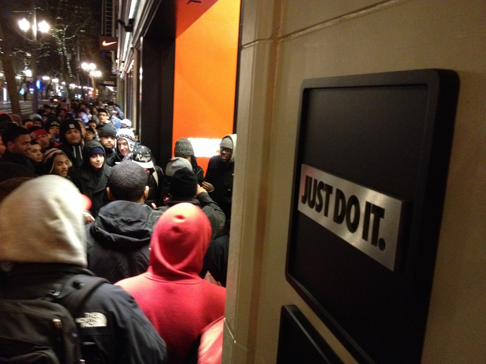

Jordans are not just shoes.
Sportswear developed a devoted fan base when the Jordan brand was launched, including young people willing to break the law to obtain it. At that time, most sneakerheads were portrayed in the media as violent and materialistic. Reports of students being robbed or killed for their sneakers started to circulate by the late 1980s. Over four months Atlanta and Chicago's Police reportedly handled more than 50 of these robberies, with about a dozen each month.
The sneaker industry has been greatly impacted by Air Jordan. Converse sneakers were popular before Jordans, but Air Jordans revolutionized the industry. Retail prices for the original Air Jordans, which debuted in 1985, were in the range of $65. These sneakers and the most recent ones, however, have only increased in value; now ranging in the hundreds and thousands. They have sponsored several NBA players, including Luka Doncic, Carmelo Anthony, Jayson Tatum, and many more, and have other sponsorship deals outside basketball.
High fashion collaborations in recent years have further increased the value of Air Jordan shoes. Designers like Virgil Abloh created a somewhat untouchable stance on Jordans, he created a collaboration with off-white known as “the ten” which shot Jordans prices up to the thousands. Those shoes had and continue to have a huge effect on pop culture. Even designers like Christian Dior wanted their print on the Jordan brand. After making their debut at the Dior Men Pre-Fall 2020 show, the Jordan 1 silhouette was given a makeover by Dior's Italian leatherwork and logo print, and the sneakers were released in mid-pandemic in June 2020. Where the $2,000 sneaker sold out within minutes even during a financial crisis. After that, their resale value immediately soared to the tens of thousands. Jordan has multiple collaborations with several athletes and artists and the famous complex show “sneaker shopping” often shines a light on the brand when celebrities get to talk through their experiences with the brand. Not many people and companies are as timeless as Michael Jordan and the Jordan brand. The introduction of Air Jordan altered basketball, the place of sports characters in popular culture around the world, and the fashion business.